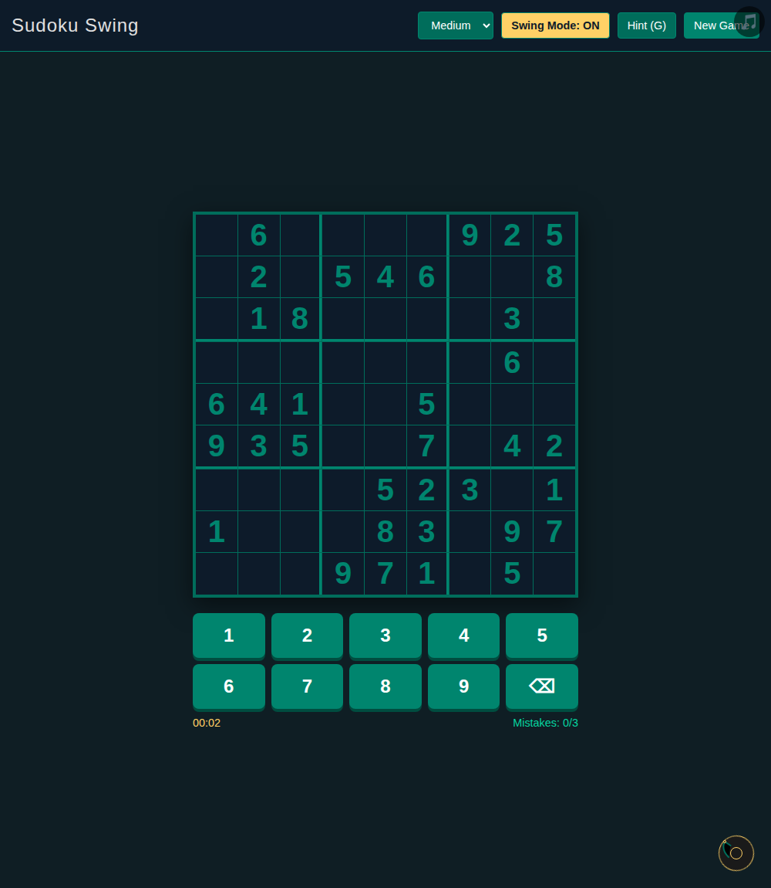
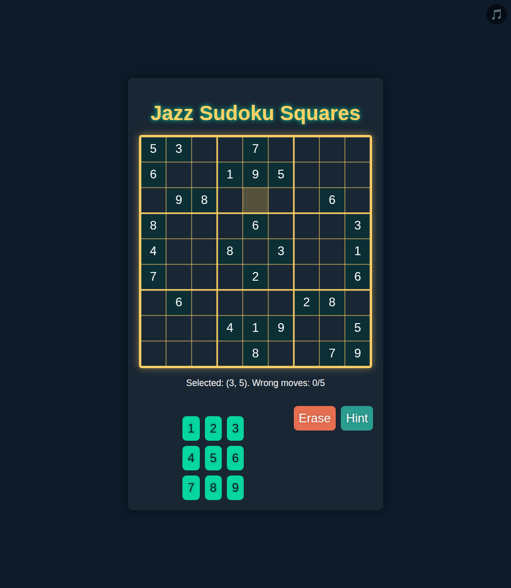

Every major AI lab now sells its models as capable programmers. The claim is hard to check, because most coding benchmarks are either invisible — you see a score, not the work — or abstract, with no resemblance to building something a person would actually use. We wanted a test that was concrete, that anyone could inspect, and where "correct" is not a matter of taste. So we gave sixty models, from eight vendors, one small but complete job: write a playable Sudoku from a single sentence — create a sudoku game with jazz music. — and then checked, mechanically, whether each one worked.
Sudoku suits the purpose. It is universally familiar, it has no graphics, physics or real-time behaviour to muddy the result, and its correctness is fully decidable: a grid either holds a valid puzzle that can be solved to a recognised win, or it does not. That lets us separate two questions that are usually tangled together — does it look like a Sudoku and is it a working Sudoku — and the distance between them turned out to be the most interesting part of the exercise.
The eight vendors, and the model classes each brought:
The natural expectation is that a coding task rewards the largest, most expensive, most capable models. Whether it actually does is the question worth answering.
Each model received the identical prompt under identical conditions; the only variable between runs was the model itself. Every result was then loaded in a real browser and checked on three points: that it draws a 9×9 grid, that the puzzle it encodes is valid, and that the puzzle can be filled in and recognised as solved. Generation time and cost were recorded for each.
Of the sixty models, forty-one returned a working game, and twenty-three produced a Sudoku that was both correct and cleanly rendered. One produced a valid but reduced 4×4 board; the rest were unsolvable, broken, or not Sudoku at all. A little over a third of current models complete the task correctly on the first attempt. Three things in that number are worth drawing out.
Appearance and correctness are separate properties, and models fail at each independently. One model wrote a correct solver and a correct win-check, then drew nothing: the page loaded with no grid on it. Any evaluation that looked only at the code, or trusted the program's internal state, would have marked it a success; only a screenshot showed there was no game. The opposite failure was just as common — a clean, well-styled grid wrapped around a puzzle with repeated digits and no solution. The practical lesson for anyone relying on generated software is that reading the code, or trusting the model's own account of what it built, is not enough. You have to run it and look at it.

Price and prestige did not predict quality. The correct, fast, inexpensive results came disproportionately from the smaller tiers and the coding-specialised models, not the flagships. The single most expensive run in the study produced an invalid puzzle. This is not evidence that the large models are weak; it is evidence that, for a well-defined task like this, the extra money bought nothing measurable.
Reading intent is part of the work. Given a deliberately vague sentence, a few flagship models built a simplified 4×4 grid instead of a standard 9×9. That is a defensible interpretation of an ambiguous request, but it is not what most people mean by "a sudoku," and it is a reminder that competent generation includes resolving ambiguity the way a user would — not only producing syntactically valid code.
Stated as plainly as the data allows:
gemini-2.5-flash-lite. It rendered a clean, complete 9×9, did so in about 36 seconds, and was the least expensive model in the test. Nothing else matched that combination.gemini-2.5-flash-lite, at roughly $0.004 per game, with Qwen's coder models close behind at about a cent.gemini-3-flash-preview, a playable board in 35 seconds.gpt-5.4, which shipped the widest set of features: difficulty levels, note-taking, hints.
The economic reading follows directly. For routine, well-specified generation — which is most real work — the inexpensive, fast tier is the rational default, and the coding-tuned models are a genuine bargain. The premium models earn their cost on problems that are genuinely hard or novel; spent on a task like this, that premium buys slower answers and, occasionally, wrong ones.
This is a single prompt, run once per model, on one date. Model line-ups change quickly, outputs vary from run to run, and Sudoku is well represented in training data — so the test measures how reliably a familiar program can be produced and rendered, not novel reasoning. Read it as a snapshot, not a ranking.
Every game is published and playable in the browser:
The full methodology, per-model data and all thirty games are in the study: https://anselmotalotta.github.io/sudoku-llm-study/
This study was produced by PlayPrompt, which builds games from natural-language prompts using third-party models. We ran it to decide which models to use, we have no model of our own in the comparison, and every generated game is published so the results can be checked. Model names are trademarks of their respective owners and are used to identify the systems tested.